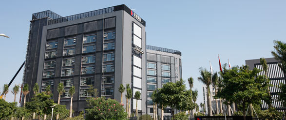
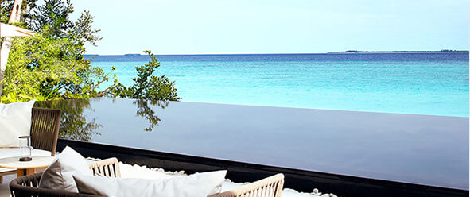

华发股份，国家一级房地产开发资质企业，曾荣膺“中国房地产上市公司20强”。1980年诞生至今，华发先后创建26个高尚人居社区、近400万平方米人居建筑，以100%销售率稳占珠海楼市总份额10%、高档市场份额30%。2004年，华发股份成功上市，迅速跃升为全国范围知名地产品牌。随着近年来成功挥师中山、北京、包头、大连、南宁、沈阳等地，华发股份的影响力正由珠海、大珠三角绵延全国。

30年历程，华发一直相信，杰出的建筑是应该有梦想的。它发源于生活的最深处，却又更多地代表着人们对明天最美好的想象与愿望。明天总在远处，梦想便无止境。
华发，筑梦而行，书写诗意生活
威海华发房地产开发有限公司是由珠海华发实业股份有限公司2013年出资成立的，具有一级土地开发及国家一级房地产开发资质的大型房地产公司。公司投资15.8亿元在经区大庆路北、疏港路西竞得总面积约58万㎡的商住用地，成为威海当之无愧的新地王。
华发•九龙湾中心位于威海市经济技术开发区一线滨海板块，占据威海城市发展重心，项目自身拥有2.6公里海岸线，规划有威海第二海水浴场、42万㎡滨海森林公园，高端瞰海住宅，城市级休闲商业街区、两座五星级酒店、体育三馆、5A级写字楼、酒店式公寓、幼儿园、小学。项目将通过建筑设计、结合景观及各项配套，打造成百万平米大型城市综合体。
商业部分的设计结合地块的生态环境，打造优美形态的商业主题街区。在立面设计部分，将传统价值植入现代形式，形成商业独特的内在气质和前卫的立面表现。在人行动线上，布置趣味性较强的节点空间，全面提升商业对客群的感染力。

华发•九龙湾中心位于威海市经济技术开发区一线滨海板块，占据威海城市发展重心，项目自身拥有2.6公里海岸线，规划有威海第二海水浴场、42万㎡滨海森林公园，高端瞰海住宅，城市级休闲商业街区、两座五星级酒店、体育三馆、5A级写字楼、酒店式公寓、幼儿园、小学。
项目将通过建筑设计、结合景观及各项配套，打造成百万平米大型城市综合体。
华发•九龙湾中心位于威海市经济技术开发区一线滨海板块，占据威海城市发展重心，项目自身拥有2.6公里海岸线，规划有威海第二海水浴场、42万㎡滨海森林公园，高端瞰海住宅，城市级休闲商业街区、两座五星级酒店、体育三馆、5A级写字楼、酒店式公寓、幼儿园、小学。
项目将通过建筑设计、结合景观及各项配套，打造成百万平米大型城市综合体。